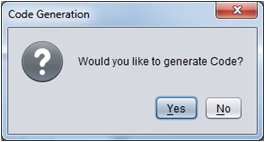

This Quick Start Guide allows users to generate a full CCS Project using a two LC sensor configuration and enabling target communication features using HID/UART communication bridge.
Placing MSP430 and LC sensors
- Place MSP on design area.
- Click on MSP icon.
- Place MSP on the design area.
- Place 2 LC sensors on design area.
- Click on "Sensors" tab and click "LC" icon.
- Place 2 LC sensors on the design area.
- Auto connect components
- Go to Options menu and select Auto-Connect Sensors.
-This will auto connect all LC sensors to MSP430.
- Double click the MSP430 to open the properties window.
- Click on "Output Selection" tab.
-Select "EVM430-FR6989" in the hardware selection menu.
-In the "Output Options" panel select all checkboxes.
- Generate CCS or IAR project -Click on "Code Generation" tab
-In the Generation Type panel select the type of project you want to generate.
-Click "Generate" button and click "Yes" when prompted to generate code.

Loading and Running project
For information regarding importing/opening project in CCS or IAR and running the generated projects please refer to Loading and Running Generated Projects